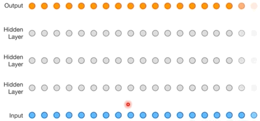
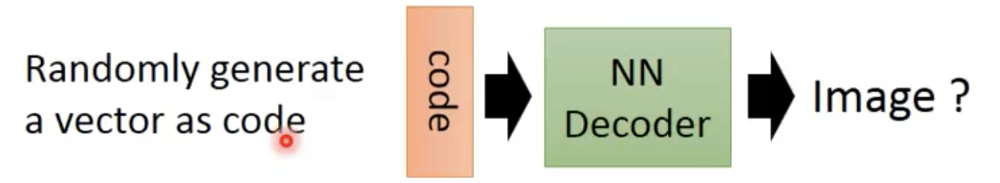

机器学习 by 李宏毅(8-1)
Unsupervised Learning - Deep Generative Model
this post will tell you a bit more about generative models: what they are, why they are important, and where they might be going.
This tremendous amount of information is out there and to a large extent easily accessible — either in the physical world of atoms or the digital world of bits. The only tricky part is to develop models and algorithms that can analyze and understand this treasure trove of data.
Generative models are one of the most promising approaches towards this goal. To train a generative model we first collect a large amount of data in some domain (e.g., think millions of images, sentences, or sounds, etc.) and then train a model to generate data like it. The intuition behind this approach follows a famous quote from Richard Feynman:
“What I cannot create, I do not understand.”
—Richard Feynman
Generative Model
- Autoregressive (PixelRNN)
- Variational Autoencoder （VAE)
- Generative Adversarial Network （GAN)
PixelRNN
Task：To create an image, generating a pixel each time. E.g 3x3 images
Method:
- Initial a pixel (RGB-3d) as input of neura network, output a new pixel
- the first pixel and ouput pixel as input of neural network, output the third pixel
- Finally, we can output 8 pixel
This neural network is called RNN, and can be trained just with a large collection of images without any a annotation
Tips：
- if each pixel is represented by 3 numbers( corresponding to RGB ）, the performance is not acceptable. Each pixel can be represented by a 1-N encoding feature, the dimension is represented the color (256x256x256).
- Dimensionality reduction，clustering the similar color -> 167 colors in total
WaveNet - Voice synthesis
直接对声音信号进行 sample 作为 Input
给定前面一段声音信号，predict 下一个信号加入前面的声音信号作为 Input

Variational Autoencoder （VAE)
Auto-encoder
训练好的NN Decoder 可以看做 Generative Network，输入 Random Vector 就可以得到一个 Image

但实际上的 Performance 比较差
Variational Autoencoder
NN Encoder output 两个 Vector，如图所示，经过一系列运算得到 Vector C，即 Autoencoder的code
假设 vector C 为10维，可以固定8维，采样其余2维。从而控制变量得出每个 dimension 的作用，产生不同的图像
2维进行采样得到的结果
Why VAE
Intuitive Reason:
- Autodecoder: 将Image encode 到 code space 中的一个点，所以在点与点之间进行sample得到的code，decode 之后可能与两张 real image 无关。
- VAE：将 Image encode 的过程中加入noise，所以一个 Image 对应 code space 中的一片区域，所以两张相近的Image 对应的 code field 很接近，区域之间 sample 得到的图像更有可能与real image 相关

- VAE的 M 向量等于 AE 的 Code，C 向量为 包含 noise 的code，exp 可以使 noise 可正可负，\(\sigma\)是e的方差，
- 如果仅仅 minimize loss，模型学习到的 variance 会为0，也就是没有noise 等于原本的 AE，因此对其的取值进行限制
- 画出图像，发现当 \(\sigma\) = 0, variance=1 时，公式的值最小，人为限制\(\sigma\) 取值尽接近0。其中 m的平方为L2正则化

Official Reason：
每个图片都是高维空间的一个点，我们需要估计图片在高维空间的概率分布 P(x)，从而根据分布 sample 得到新的图片与real data接近的可能性最大。
可以使用 Gaussian Mixture Model
P(m) 为不同的 Gaussian Distribution 的权值，然后根据weight 决定从哪一个 Guassian sample data
怎么从 Guassian Mixture Model Sample?
根据 multinomial distribution 决定sample 哪个 Guassian
每个Guassian 有不同的 mean，variance
\[ P(x) = \sum_{m}^{}P(m)P(x|m) \]
Each x you generate is from a mixture, Distributed representation is better than cluster
对于 VAE：
sample vector z from normal distribution \(z \text{~} N(0,1)\)，Each dimension represents an attribute
根据 z 决定Gaussian 的mean，variance，z的取值可能性是无限的
\[ x|z\text{~N(μ(z)},\sigma(z)) \]
\[ \mu(z), \sigma(z) = NN(z) \]
每一个sample得到的z，都对应 P(x) 上的一个 Guassian，所以有无穷多的Guassian
得到 distribution P(x)，z 可以从任何分布 sample
\[ P(x) = \int_{z}P(z)P(x|z)dz \]
Maximizing the likelihood of the observed x
\[ L = \sum_{x} logP(x) \]
即调整 NN 的参数，使得 L 最大
\[ logP(x) = \int_{z}q(z|x)logP(x)dz \text{, q(z|x) 是任意 distribution} \]
\[ =\int_zq(z|x)log(\frac{P(z,x)}{P(z|x)})dz=\int_zq(z|x)log(\frac{P(z,x)}{q(z|x)}\frac{q(z|x)}{P(z|x)}) \]
\[ =\int_zq(z|x)log(\frac{P(z,x)}{q(z|x)})dz+\int_zq(z|x)log(\frac{q(z|x)}{P(x|z)})dz \]
\[ =\int_zq(z|x)log(\frac{P(z,x)}{q(z|x)})dz+KL(q(z|x)||p(x|z))\text{, KL divergence >=0} \]
\[ \ge\int_zq(z|x)log(\frac{p(z,x)}{q(z|x)})dz\text{, Lower Bound }L_b \]
\[ logP(x) = L_b + KL(q(z|x)||p(x|z))\text{, L}_b=\int_zq(z|x)log(\frac{p(x|z)P(z)}{q(z|x)})dz \]
P(x|z) 为Decoder，q(z|x)为 Encoder，Maximizing logP(x) 等价于 Maximizing \(L_b\)，Find 合适的\(p(x|z) \text{ and }q(z|x)\)
固定\(p(x|z)\) 调整 \(q(z|x)\) ，因为 logP(x) 的大小只和 \(p(x|z)\)有关所以如图，最后KL越来越小，\(p(x|z) \text{ and }q(z|x)\)越来越接近。
\[ L_b =\int_zq(z|x)log(\frac{P(z)}{q(z|x)})dz + \int_zq(z|x)log(P(x|z))dz \]
\[ L_b = -KL(q(z|x)||P(z))+ \int_zq(z|x)log(P(x|z))dz \]
Minimizing \(KL(q(z|x)||P(z))\)，调整 Encoder 参数，使得 Mean 和 Variance 和 P(z)越接近越好，等价于
Maximizing
\[ \int_zq(z|x)log(P(x|z))dz=E_{q(z|x)}log(P(x|z)) \]
等价于 x 输入到 Encoder得到 distribution q(z|x)，sample 出一个z，输入Decoder 中得到distribution P(x|z)，使得 P(x|z) 的 Mean 接近 x，就可以 Maximizing log(P(x|z))
Problems
- VAE 并没有真正学习模拟真实的图像，只是记忆存在的data，尝试生成和已有data一样的data
GAN
previous Post